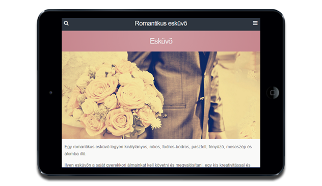

Bárhol Bármikor
A megjelenés tökéletes

Mára többen és több weblapot néznek meg mobilról és tabletről mint más készülékről.
A korszakalkotó responsive technológiát alkalmazva Weboldala ugyan úgy tökéletesen jelenik ezeken a
készülékeken
mint ha FullHD vagy 4K felbontású asztali gépről nézné.
Gyors
Hisz így terveztük
Amikor weboldalán dolgozunk, céljaink bizonyos értelemben ellentmondások: egyrészt roppant gyorsasággal szeretnénk felruházni, másrészt művészi megjelenést szeretnénk kialakítani, hogy megragadja ügyfeleit. Ha 3 secundumnál több idő kell oldala betöltéséhez a látogatók 25%-át azonnal elveszti. Ezt nem engedhetjük meg.
SEO
Nem bújocskázni akarunk
Bár a Google oldalak milliárdjait térképezi fel, a felhasználók csupán csak a második oldalig lapoznak. Éppen ezért a fejlesztés közbe arra is törekszünk, hogy Google-barát webhelyet hozzunk létre. Biztosítva ezzel Önnek, hogy jövendőbeli ügyfelei megtalálják.
Social Marketing
Az elengedhetetlen láncszem
Az elengedhetetlen láncszem A Deloitte felmérése szerint 2014-ben a Facebook hatása a globális gazdaságra több, mint 225 milliárd dollár, és 4.5 millió új munkahely létrehozásában segített.